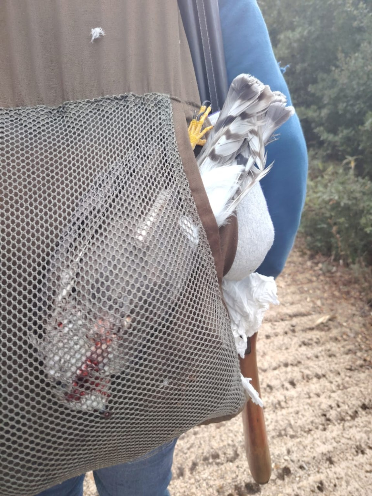

مراقبة ميدانية نفذتها CABS بالتعاون مع MECSHAP والقوى الأمنية انتهت بمصادرة أسلحة وتوثيق إطلاق النار على أربعة طيور من حوّام العسل.
في مرتفعات عكار، حيث تعبر الطيور الجارحة خلال موسم الهجرة، لفت تفصيل غير مألوف انتباه فرق مكافحة الصيد غير القانوني: طائر باشق داخل حقيبة ظهر كان يحملها أحد الأشخاص الذين أوقفتهم القوى الأمنية.
وبحسب ما أوردته اللجنة الدولية لمناهضة قتل الطيور (CABS) على موقعها، جاءت العملية بعد مراقبة فريقها موقعًا جبليًا في عكار معروفًا باستهداف الطيور الجارحة، بالتعاون مع مركز الشرق الأوسط للصيد المستدام ومكافحة الصيد الجائر (MECSHAP) والقوى الأمنية.
وأفادت المنظمة بأن عناصر الشرطة أوقفوا رجلين في الموقع. كان أحدهما يحمل الباشق داخل حقيبته، فيما أوقف الثاني أثناء توجهه إلى سيارته. وتشير CABS إلى أن الرجل الثاني سبق أن أفلت من توقيف في الموقع نفسه خلال خريف العام الماضي.

ونُقل الرجلان إلى المخفر، وصودرت أسلحتهما، وبوشرت الإجراءات القانونية بحقهما، وفق رواية المنظمة.
لكن المتابعة الميدانية لم تتوقف عند هذين الشخصين.
فقد قالت CABS إن مراقبيها وثّقوا إطلاق شخصين آخرين النار على طيور جارحة من نوع حوّام العسل، بمعدل طائرين لكل منهما. وتمكّن الفريق من تعقّبهما حتى مكانَي إقامتهما، قبل تسليم المعلومات والأدلة إلى الشرطة لاتخاذ الإجراءات القانونية اللازمة.
وتندرج العملية ضمن الجهود المشتركة لوحدة مكافحة الصيد الجائر APU (MECSHAP–CABS)، بالتنسيق مع قوى الأمن الداخلي، لحماية الطيور خلال عبورها لبنان والتصدي للمخالفات التي تستهدف الأنواع المحمية.
وتُبرز وقائع عكار أهمية المراقبة الميدانية وتوثيق المخالفات والتعاون بين الفرق المختصة والقوى الأمنية، في مواجهة الصيد غير القانوني للطيور الجارحة على مسارات هجرتها.
اقرأ أيضًا
المصدر: CABS